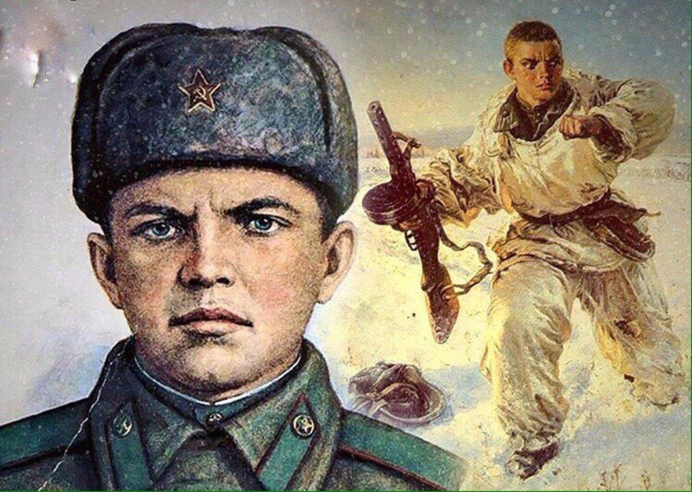
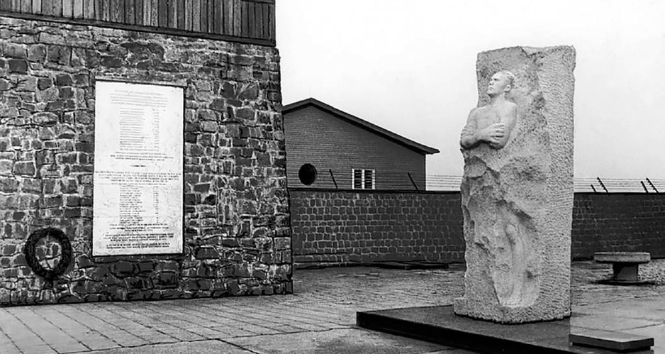
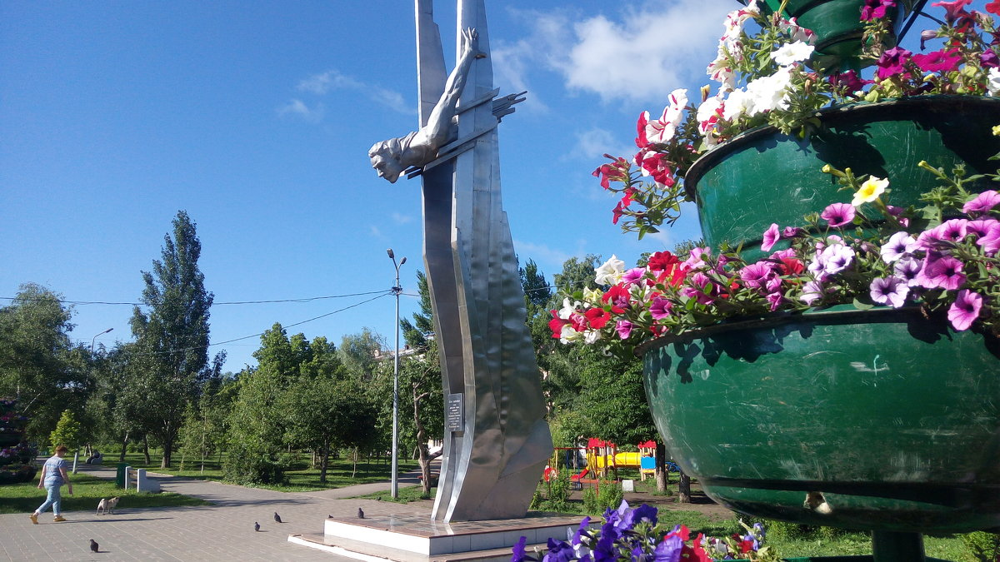
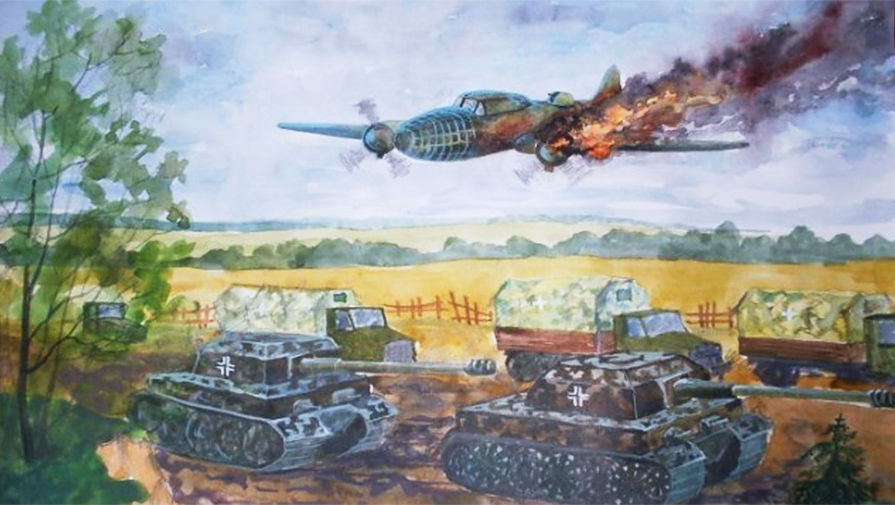
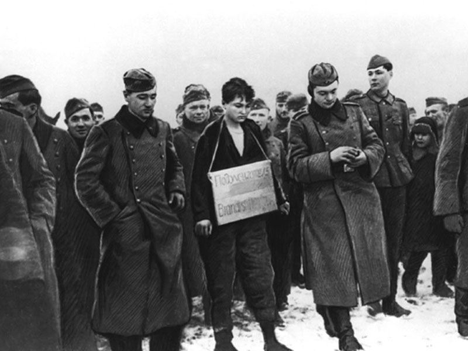
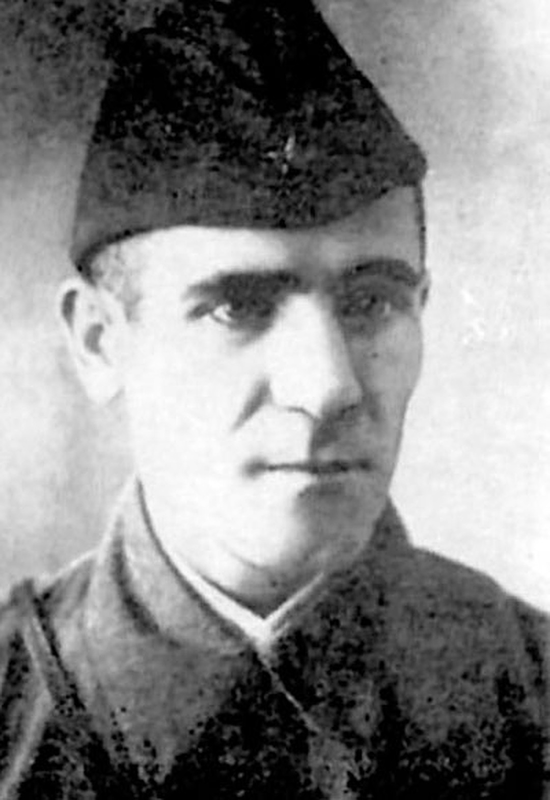
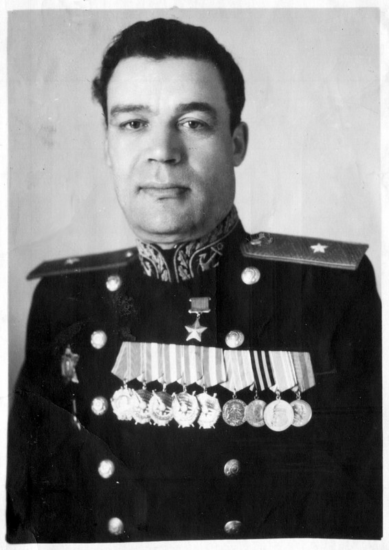
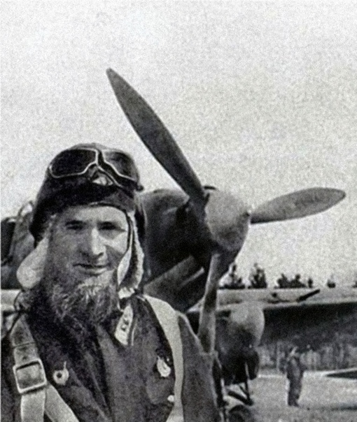
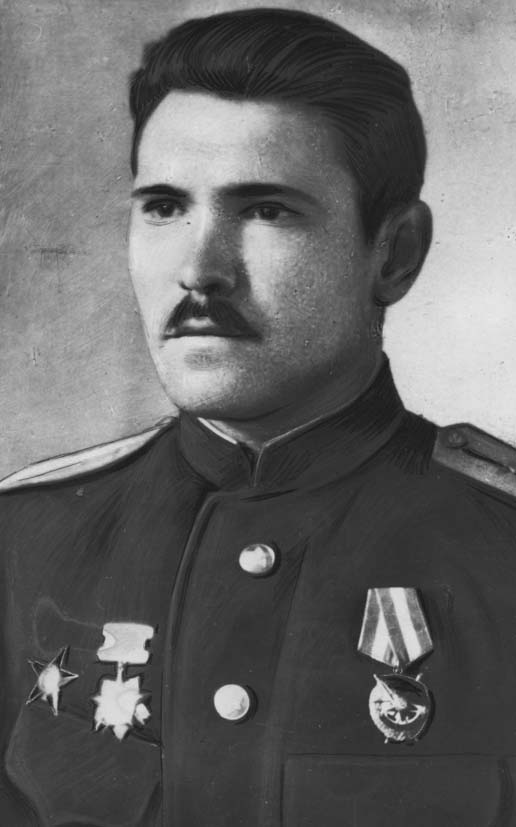

Улицы в честь героев войны
Великая Отечественная война унесла миллионы жизней наших соотечественников и оставила в вечности имена тысяч героев. Память о них живет не только в сердцах благодарных потомков, но и в названиях городских улиц. Cамара не исключение. Представляем героев Великой Отечественной войны, увековеченных в самарской топонимике.
Имя это знакомо даже неискушенному в истории человеку — Матросов бросился грудью на амбразуру вражеского дзота. Случилось это 27 февраля 1943 года близ деревни Чернушки Псковской области. Ее-то и предстояло освободить батальону, в котором служил Матросов. Подступы к деревне прикрывали три пулемета, установленные в дзотах. Два из них удалось ликвидировать, но третий упорно продолжать мешать наступлению наших войск. Матросов пробрался к амбразуре дзота и бросил внутрь две гранаты. Выстрелы прекратились. Но стоило нашим бойцам подняться в атаку, пулемет вновь начал поливать их градом пуль. Тогда Александр Матросов подбежал к дзоту и бросился на амбразуру, закрыв ее своим телом, что позволило нашим войскам атаковать и выполнить боевую задачу. История попала в прессу, и имя героя стало активно использоваться советской пропагандой.
Улица
До 1949 года – 12-я линия Безымянки.
С 1949 по 1965 год – Томашевский проезд.
Улица Александра Матросова берет свое начало от ул. Красных Коммунаров, проходит через Безымянку, Томашев Колок и оканчивается на пересечении с проспектом Карла Маркса.
Служил еще в царской армии. Первая война, в которой участвовал Карбышев, – Русско-японская (1904-1905). Далее были Первая мировая, Гражданская и Советско-финская войны
Начало Великой Отечественной он встретил в Гродно в звании генерала. 27 июня вместе со штабом 10-й армии оказался в окружении. 8 августа 1941 года при попытке выйти из него Карбышев был тяжело ранен в бою и захвачен в плен у деревни Добрейка Могилёвской области. Далее последовал «вояж» по семи немецким концлагерям. Фашисты неоднократно предлагали генералу Карбышеву сотрудничество, на что он отвечал неизменным отказом.
Улица
До 1965 года – Восьмой проезд.
Улица Карбышева начинается от Парка Победы, заканчивается на пересечении с улицей Блюхера.
Легендарная советская летчица. Участвовала в обороне и освобождении Северного Кавказа, Крыма и Белоруссии. Совершила 630 боевых ночных вылетов в качестве командира эскадрильи бомбардировщиков 46-го гвардейского авиаполка, также известного как «Ночные ведьмы». Он был полностью укомплектован представителями слабого пола, однако их боевые навыки и профессионализм вызывали страх у противника
Погибла Ольга Санфирова 13 декабря 1944 года при возвращении с боевого задания на территории Польши. Экипажу удалось выпрыгнуть из самолета с парашютами, но при переходе линии фронта Санфирова подорвалась на мине
Улица
До 1965 года – Восьмой проезд.
Улица Ольги Санфировой является идейным продолжением ул. Карбышева.
Проходит от ул. Блюхера до Московского шоссе.
Советский летчик, совершивший самый знаменитый огненный таран в истории Великой Отечественной войны. История его возведения в ранг безусловных героев во многом сходна с подвигом Александра Матросова.
Во время боевого вылета 26 июня 1941 года, целью которого был бомбовый удар по колонне немецкой техники, самолет Гастелло был подбит немецкой зенитной артиллерией. Был поврежден топливный бак, и самолет загорелся. Гастелло направил горящую машину на колонну врага. Все члены экипажа погибли. Подвиг был широко освещен в прессе, и как итог появилось «движение гастелловцев» — пилотов, совершивших огненный таран, а их за всю историю войны было немало
Улица
До 1965 года – Девятый проезд (от улицы Гагарина до Московского шоссе)
и Седьмая Радиальная (от Московского шоссе до Ново-Садовой).
Боец диверсионно-разведывательного отряда, действовавшего в Московской области, целью которого было уничтожение населенных пунктов, захваченных немцами. Во время одной из операций она была схвачена. Космодемьянскую повесили после длительных и жестоких пыток. Перед казнью произнесла ставшую легендарной фразу: «Сколько нас ни вешайте, всех не перевешаете».
Улица
Проходит от Московского шоссе до улицы Георгия Димитрова, в Приволжском микрорайоне.
Наш земляк, родился в селе Шилан Красноярского района. Работал на заводе Масленникова, проходил службу в Красной армии на самарском аэродроме ОСОАВИАХИМа. Участвовал в боях на территории восточной Украины и Северного Кавказа. Погиб в январе 1943 в бою за освобождение Ставрополя.
За героизм, проявленный в ходе этой операции, старший лейтенант Иван Булкин посмертно награжден орденом Красного Знамени
Улица
До 1954 года – Шестой проезд.
Улица Ивана Булкина проходит от ул. Мориса Тореза до проспекта Карла Маркса.
Родился в Самаре в 1908 году. В 1927-м был призван на службу на флот, однако связал свою жизнь с авиацией, поступив в Военно-теоретическую школу ВВС в Ленинграде. Участвовал в Советско-финской войне. Великую Отечественную встретил в должности командира 72-го авиаполка Северного флота. Уже на шестой день войны его истребителем был сбит в групповом бою вражеский самолет
Осенью 1941 года Губанов был награжден орденом Красного Знамени. С 1954 года был начальником военной кафедры Куйбышевского авиационного института.
Улица
До 1986 года – Четырнадцатая Ипподромная.
Улица Губанова проходит от Московского шоссе до ул. Солнечной.
Летчик-истребитель, воевал в полку легендарного Александра Покрышкина, где был командиром эскадрильи. На счету Фадеева 293 боевых вылета и 17 сбитых самолетов врага.
Погиб в 1943 году в неравном бою с превосходящими силами противника. Фадеев отличался богатырским телосложением и, возможно, чтобы подчеркнуть сходство с персонажами русских былин, имел окладистую бороду. В итоге «Борода» стал его позывным
Улица
До 1965 года — Седьмая Продольная.
Улица Фадеева проходит от ул. XXII Партсъезда до Ново-Вокзальной.
До войны работал токарем на заводе им. Масленникова. В Красной Армии с 1940 года. В 1942 году окончил Энгельсскую военную школу пилотов, с октября — в действующей армии. Погиб во время 220-го боевого вылета при выполнении боевого задания в Венгрии, 6 января 1945 года направив свой горящий самолет на зенитную батарею врага
15.05.1946 Петру Потапову было посмертно присвоено звание Героя Советского Союза
Улица
До 1965 года — Четвертая Радиальная.
Улица Потапова проходит от Московского шоссе до Ново-Садовой, параллельно улице Гастелло.